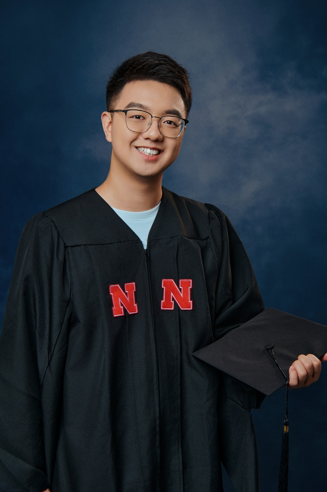

Fun fact: starting in food science does not mean I was trained to be a chef.
In brief
I am a PhD trainee in Dr. Yiquan Wang's lab at the University of Florida, working in computational immunology and antibody engineering: how antibody frameworks, binding loops, and epitopes shape predicted antigen recognition, and when those predictions can be trusted.
Before this I trained in food science, human nutrition, the gut microbiome, systematic review, and a human clinical trial. Across all of it, I am interested in how biological interactions can be understood, predicted, and eventually engineered.
Breadth first, then depth, toward one cycle
The early years were wide, almost all on the observing and understanding side. The PhD is adding depth in prediction and design. Each stage below is described by what it taught me and how it shaped the way I work now; the full chronology is on the CV.
Observe and understand
-
Observe
2022 – 2023Northwest A&F University · with Dr. Chunxia Xiao- Food science
- Fermentation
- Bioactive compounds
- Assays & controls
Food science was where I first watched a biological effect exist only next to its control, and disappear when the assay behind it was not understood. It taught me to distrust a number until I knew what the instrument was actually reporting. That habit of careful measurement, and of asking what a measurement can and cannot claim, has followed me into every project since.
-
Understand
2023 – 2026University of Nebraska–Lincoln · with Dr. Edward Deehan- Human nutrition
- Gut microbiome
- Clinical trials
- Systematic review
- Statistics
Human nutrition and the gut microbiome showed me biology as a web of interactions: diet meeting microbes, microbes meeting their host, and context deciding what any single intervention does. The same food produced different responders, and reading hundreds of studies side by side made heterogeneity impossible to ignore. I stopped thinking in ingredients and started thinking in interactions, contexts, and the study designs that make an effect interpretable.
Predict and design
-
Model & predict
2026 – now Wang Lab · Dept. of Infectious Diseases & Immunology · with Dr. Yiquan Wang
Wang Lab · Dept. of Infectious Diseases & Immunology · with Dr. Yiquan Wang- Computational immunology
- Structure prediction
- Antibody–antigen recognition
Experiments had taught me their own limits: too few people, too few conditions, too little of the design space explored before committing to a measurement. Computation became the way to widen what I could ask, on the condition that a prediction earns trust the way an assay does, with controls, replicates, and provenance. Antibody–antigen recognition is where I am learning that discipline now, because the objects are defined and a prediction can be checked against a known structure.
-
Modulate & engineer
developing- Antibody engineering
- Protein design
- Generative design
A prediction is only worth something if it can change something. Turning validated factors into a redesigned molecule is the stage I have the least experience in, and the one the PhD is for. It closes the loop: a designed molecule, like a changed diet, becomes a new interaction to observe.
My long-term interest is not one molecule, disease, or experimental system. It is a transferable way of thinking about biological interactions: observe them, understand the objects and the context involved, model and predict the factors that shape them, validate those factors experimentally, and learn to modulate or engineer the interaction. My research subjects changed. The questions kept converging.